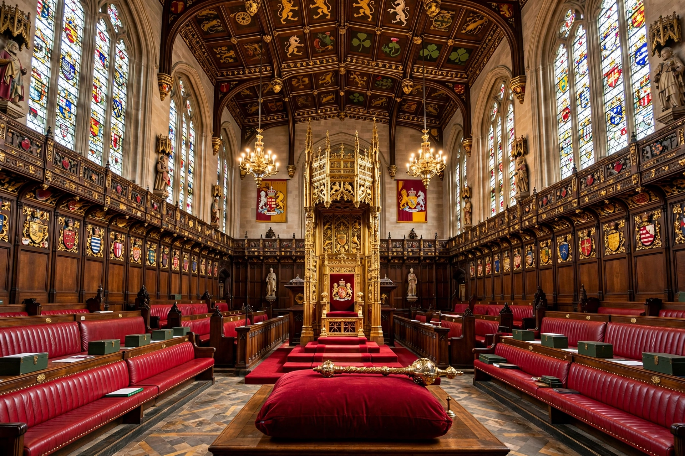

Peerage of the United Kingdom
| Peerage of the United Kingdom | |
| Created | 1801 (Acts of Union 1800) |
|---|---|
| Ranks | Duke, Marquess, Earl, Viscount, Baron |
| Preceded by | Peerages of Great Britain and Ireland |

The Peerage of the United Kingdom is one of the five peerages of the United Kingdom, comprising titles created since the union of Great Britain and Ireland on 1 January 1801. Its ranks, in descending order, are duke, marquess, earl, viscount and baron.
History
Holders of UK peerages were entitled to sit in the House of Lords; the earlier Peerage of Ireland, by contrast, did not automatically confer a seat. The creation of hereditary peerages largely ceased after 1964 — the last non-royal hereditary creations were in 1984 — while life peerages under the Life Peerages Act 1958 became the norm. The House of Lords Act 1999 removed the automatic right of most hereditary peers to sit, leaving 92 hereditary seats.
Creation and styles
Peerages are created by the sovereign by letters patent on ministerial advice. Dukes are styled "His Grace", marquesses and earls "Lord/Lady", viscounts and barons "Lord/Lady"; wives take feminine forms of their husbands' styles.
See also: Peerage, House of Lords.